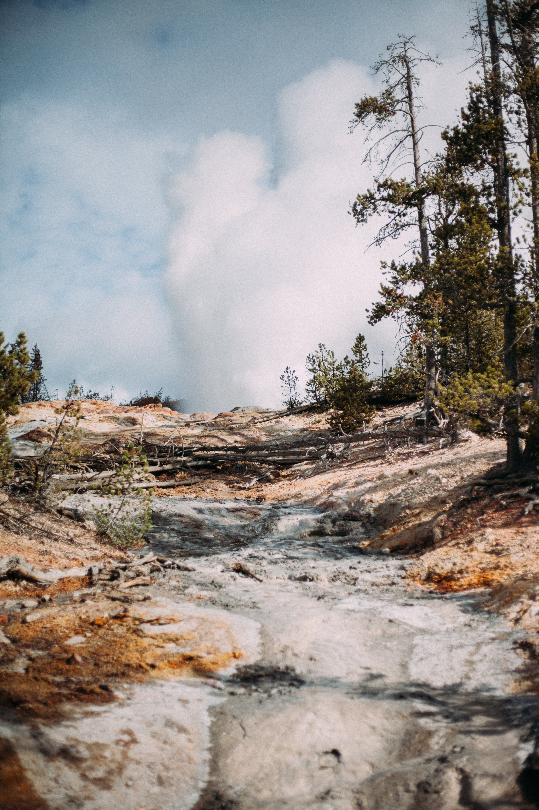
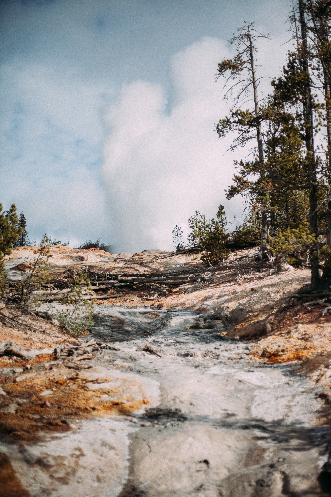

Yellowstone Tour Guides
Yellowstone Tour Guides
This workshop takes advantage of the elk rut along with the fall colors in the lower elevations of Grand Teton National Park. This workshop includes 1 night at Big Sky, 1 night in West Yellowstone, 1 night east of Grand Teton National Park, 1 night at Yellowstone’s East Entrance and 1 night at Cooke City, ending in Bozeman. This workshop is 6 nights and 5 days.
(October 7 through October 11, 2021-2023)
Day 1: Arrive at Bozeman, MT, transfer to the 320 Guest Ranch for an evening dinner.
Day 2: This is the first day of the workshop, starting bright and early with sunrise and early morning wildlife in Yellowstone’s Gallatin District and West Entrance Corridor. The elk rut is on, and there should be some good action on these days. The afternoon will be spent visiting Yellowstone’s more famous thermal features, including Grand Prismatic and Old Faithful. The night will be spent at West Yellowstone, MT.
Day 3: Next we will depart West Yellowstone, for Jackson, WY, touring the thermal areas along the way with some of the viewpoints in Grand Teton National Park. We should be able to visit during the height of the fall colors, making for some spectacular photos. On this night we will stay in the Togatee Mountain Lodge, east of Grand Teton National Park.
Day 4: This day will be spent in Grand Teton National Park, looking for moose and other wildlife. We will also take advantage of the fall colors, and whatever else catches our eye. When afternoon rolls around, we will head back into Yellowstone, traveling the shores of Yellowstone Lake and out the East Entrance for lodging.
Day 5: We will take advantage of early morning wildlife along the East Entrance Road and Hayden Valley, and touring the Grand Canyon of the Yellowstone. We will continue to work our way through the Lamar Valley for evening wildlife. We will spend the night in Cooke City at the Northeast Entrance.
Day 6: Our last day will start with early Morning wildlife in the Lamar Valley, working our through the Northern Range, Mammoth Hot Springs and on to Bozeman.

 
